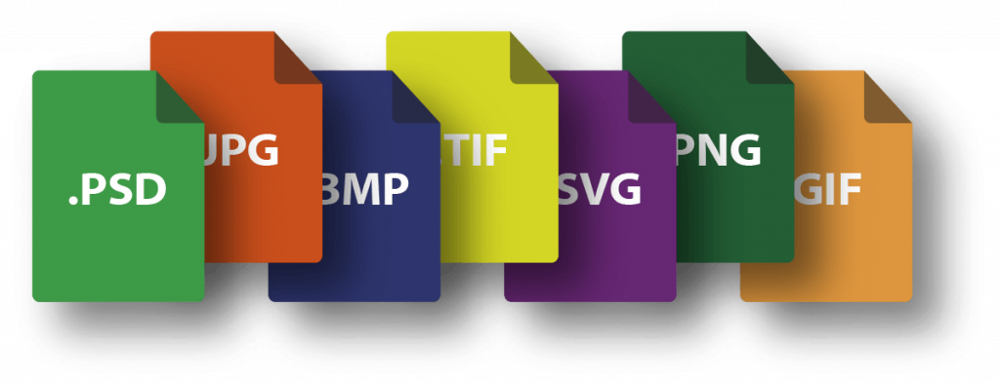

Definición de Conceptos: Imagen de Mapa de Bits y Gráfico Vectorial
5. Imágenes como Mapa de Bits y Vectorial
Contenido
Dentro de las categorías de imágenes, existen dos muy importantes que son: las de mapa de bit y vectorial:
Mapa de bits o raster: son imágenes pixeladas, es decir están formadas por un conjunto de puntos (píxeles) contenidos dentro de una tabla, cada uno de estos tiene un valor o más que describe su color. Al ser formadas por pixeles al intentar transformarlas, sufren una distorsión, es decir un efecto escalonado o pudelación.
Vectoriales: son representaciones de entidades geométricas, tales como círculos, rectángulos o segmentos. Son representadas por fórmulas matemáticas (un rectángulo está definido por dos puntos; un círculo, por un centro y un radio; una curva por varios puntos y una ecuación) el procesador la traducirá en información que la tarjeta gráfica pueda interpretar, esto permite realizar varias transformaciones, consumen muy poca información por lo que son archivos bastante pequeños.

Obra publicada con Licencia Creative Commons Reconocimiento Compartir igual 4.0